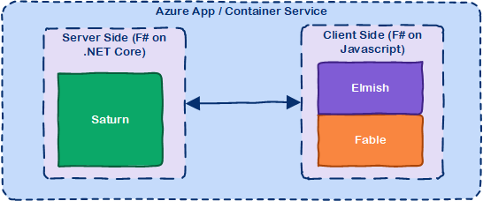

SAFE Stack Overview
SAFE Stack components
The SAFE acronym is made up of four separate components:
- Saturn for back-end services in F#
- Azure as a hosting platform plus associated platform services
- Fable for running F# in the web browser
- Elmish for client-side user interfaces

Saturn
The Saturn library builds on top of the solid foundation of both the F#-friendly Giraffe and the high performance, rock-solid ASP .NET Core web server to provide a set of optional abstractions which make configuring web applications and constructing complex routes extremely easy to achieve.
Saturn can host RESTful API endpoints, drive static websites or server-generated content, all inside an easy-to-learn functional programming model.
Microsoft Azure
Azure is a comprehensive set of cloud services that developers and IT professionals use to build, deploy and manage applications through a global network of data centres. Integrated tools, DevOps and a marketplace support you in efficiently building anything from simple mobile apps to Internet-scale solutions.
Fable
Fable is an F# to JavaScript compiler powered by Babel, designed to produce readable and standard code. Fable allows you to create applications for the browser written entirely in F#, whilst also allowing you to interact with native Javascript as needed.
Elmish
The Elmish model allows you to construct user interfaces running in the browser using a functional programming model. Modelled on the Elm application model, Elmish uses the Model-View-Update paradigm to allow you to write applications that are simple to reason about. Elmish sits on top of the React framework.
Further reading
Please also feel free to read this blog series on the Compositional IT website for more details on the history of SAFE.
Are there alternative components in the SAFE stack?
Yes, absolutely. The above components are what we recommended as the default SAFE stack, but you can of course replace the components with alternatives as you see fit. Here are some alternative technologies which are also recommended by the SAFE team if the basic stack does not fit your needs:
- Giraffe is a programming model designed for F# that runs on ASP .NET Core. As Saturn runs on top of Giraffe, you automatically get full access to it, but nonetheless it is entirely possible to write applications solely in Giraffe.
- Freya is an alternative F#-first web stack which has a pluggable runtime model which allows it to be hosted in a variety of web servers including ASP .NET Core.
- AWS is Amazon's cloud compute offering, providing a large number of services available globally.
- WebSharper is a complete end-to-end programming stack, comprising both server- and client-side components. It supports both F# and C# programming models.